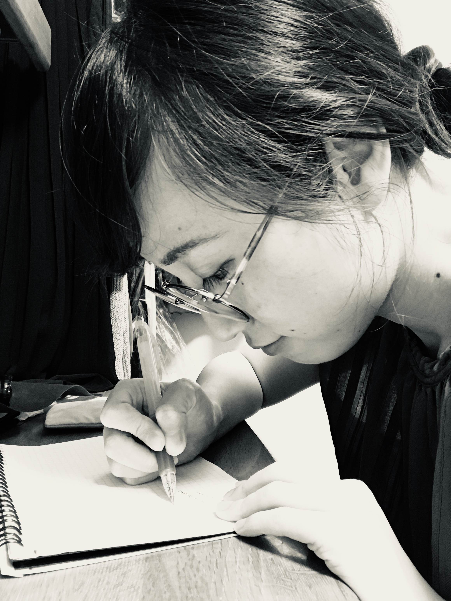

Profile
自己紹介

About
Yoshimi Ogata
1991年 東京生まれ、東京育ち。
法学部法律学科卒業後、不動産会社に就職。その後オーストラリアへ留学。
帰国後は経理事務、総務、インターネット上で繰り広げられるマネーロンダリング・クレジットカード不正利用の監視業務に携わる。
webデザイナーの勉強をしようとおもったきっかけ
経理事務を担当する中で売上の変動を観察することがあり、イベントやTV番組出演、販促の有無などが売上にどのように影響するのか考えるようになりました。
そんな中、経理からwebデザイナーへ転身された方の話を聞く機会があり、作り出されたwebサイト・バナーやLPなどがクライアントの売上にどのように反映されるのか興味をもちました。
自分の創りだしたものが顧客の売上UP・認知度UPなどにつながり問題解決や目的達成に通じる仕事をしてみたいと思い勉強するに至りました。
Future
webデザインを勉強していくうちにwebデザイナーを経た後、将来的にはクライアントの問題解決・目標達成などの要望により近いポジションであるwebディレクターを目指したいと思いました。
ワイヤーフレーム・カンプ・簡単なイラスト・アイコン・ロゴなどの作成が可能です。
このページのイラスト・アイコンはすべて自作。
簡単な合成、基本操作が可能です。
まずは任せていただける仕事を正確かつ迅速にこなすとともにデザインやコーディング、UI・UXデザインについてもスキルアップしていきたいと思います。
将来的にはKPIを達成するために何が必要か技術面でも問題ないのかなどが把握できるサービスディレクターを目指し、かつ新しい情報のキャッチアップをしていきながら常に向上していきたいと思います。
Skills
Illustrator
Photoshop